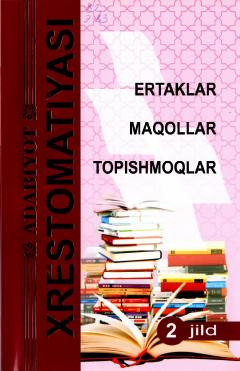

EMO'zbek xalqining sara ertaklari, maqollari va topishmoqlari jamlangan qiziqarli xrestomatiya.
Mazkur xrestomatiya kitobida o'zbek xalq og'zaki ijodining sara namunalari bo'lgan ertaklar, maqollar va topishmoqlar jamlangan. Nashr yosh kitobxonlarning tafakkurini boyitish, xalq donoligidan saboq chiqarish va dunyoqarashini kengaytirishga xizmat qiladi.